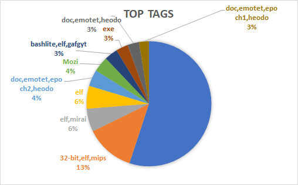

Data
Twitter is a microblogging and social networking service where users interact with tweets. This can include hacktivists such as anonymous and th3j35t3r. This provides value in the sense that Tweets from hacktivists can discuss recent data breaches or future attacks on medical facilities.
Active hacker Twitter handles include:
- @YourAnonCentral
- @CtrlSec
- @th3j35t3r
- @anonyops
Collection strategy:
- Tweets are collected using the Twitter advanced search operators.
- Search operators allow for the collection a user’s past 3200 tweets.
- Tweets can be parsed for relevant terms.
- This includes hashtags such as #healthcare and #databreach
Relevant Attributes:
- Tweet content
- Link url
- Mentions
- Hashtags
Dataset statistics:
- 24,703 tweets from 9 hacker Twitter groups
Reddit is a social news aggregation, web content rating, and discussion website. Reddit posts can serve as a livestream of data that can include feature rich posts relating to new attacks, breach victims and emerging security threats.
Largest cybersecurity related subreddits:
- r/netsec - 403k members
- r/cybersecurity - 230k members
- r/asknetsec - 141k members
- r/malware - 50.1k members
Collection strategy:
- Reddit API is used to collect data ranging back to Jan 1, 2021
- The api allows for collection of all content posted to the aforementioned subreddits
- Posts containing keywords such as health, healthcare, hospital, etc are being flagged with a isRelevant boolean variable
Relevant Attributes:
- Title
- Body
- Author
- Likes/Dislikes
- isRelevant boolean
MalwareBazaar
Collection of malware samples that can be utilized to help healthcare threat analysts protect customers and organizations from cyber threats.
Data Attributes
- Date Discovered
- Sha-256 hash
- Md5 hash
- File name
- File Type
- Signature (Malware Family)
- Mime Type
Dataset statistics:
- 266,722 ransomware samples
- Top 10 Ransomware Families are pictured in the displayed figure.

URLhaus
Database is operated by abuse.ch. It collects, tracks, and shares malware URLs. It is used to help security analysts identify network threats.
Data Attributes
- Data added
- url
- url status (offline or online)
- threat
- tags
- reporter
Dataset statistics:
- 1,010,032 URLS associated with Malware
- Most seen tags associated with malware URLs can be seen in the displayed figure.
